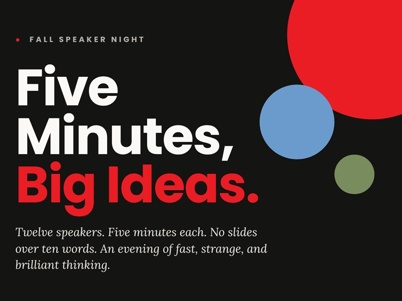

AU Flyer Skill
A Claude skill that turns event details into an Atlantis University flyer in the right school colours.
My dad taught me that giving up is never an option. I came to AI from marketing and sales, and I still ask the first question that job taught me: who is this really for?

A Claude skill that turns event details into an Atlantis University flyer in the right school colours.
How I refined an Atlantis University flyer from first draft to final version.
My personal presentation on who I am and where I am heading in AI.